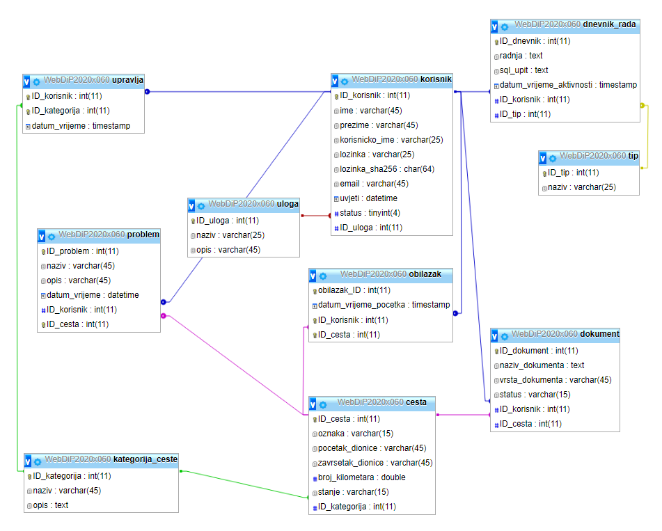

a) Opis projektnog zadatka
Administrator
- Pregledava/kreira/ažurira kategorije cesta (Autocesta, Državna cesta, ...) i dodjeljuje
moderatore. Jedan moderator može upravljati s više kategorija cesta, a jedna kategorija
može imati više moderatora.
- Može napraviti sigurnosnu kopiju (eng. backup) svih dionica cesta i popisa dokumenata iz
baze u obliku SQL skripte. Ne radi se sigurnosna kopija datoteka.
- Može vratiti podatke iz sigurnosne kopije pri čemu se brišu trenutni podaci u bazi. Za svaku
dionicu ceste automatski se provjerava da li postoje fizičke datoteke dokumenata koje su
postavljene od strane prometnika i ako ne šalje se zahtjev na e-mail prometniku da se
ponovo postave.
- Administrator vidi statistiku korištenja sustava pristupa stranicama (min 5), uz mogućnost
filtriranja po korisnicima i vremenskom razdoblju (od – do).
Moderator
- Pregledava/kreira/ažurira dionice cesta za kategorije cesta za koje je zadužen. Kod kreiranja
mora odabrati kategoriju ceste i unijeti oznaku (DC3), naziv početka dionice (Varaždin), naziv
završetka dionice (Čakovec) i broj kilometara.
- Može vidjeti popis problema i otvoriti/zatvoriti dionicu ceste za daljnje prometovanje.
- Vidi popis dokumenata te potvrđuje/odbija dokumente za dionicu ceste koje je postavio
prometnik. Posebno su označeni dokumenti dionice cesta koji nisu potvrđeni ili odbijeni.
Registrirani korisnik / Prometnik
- Može evidentirati obilazak odabirom dionice ceste koja je otvorena i prijaviti problem na
cesti. Prijava se sastoji od naziva, opisa, datuma i vremena.
- Vidi popis svih svojih obilazaka s ukupnim brojem prijeđenih kilometara.
- Može postavljati dokumente za dionicu ceste pri čemu bira vrstu dokumenta (slika, video,
audio, ...).
- Vidi galeriju potvrđenih dokumenata. Može filtrirati po vrsti dokumenta i definirati koliko
dokumenata se prikazuje po stranici.
Neregistrirani korisnik
- Na početnoj stranici prikazana je statistika broja problema po kategoriji ceste.
- Vidi popis svih dionica cesta (oznaka, početna i završna dionica) grupirano po kategorijama.
- Može pretraživati dionice ceste unosom polazišta i odredišta čime dobiva popis dostupnih
dionica ceste s brojem kilometara.
- Putem RSS kanala može se pratiti zatvorene dionice ceste po svakoj kategoriji ceste.
b) Opis projektnog rješenja
U nastavku je opis projektnog rješenja. Sam sustav je dostupan na "http://barka.foi.hr/WebDiP/2020_projekti/WebDiP2020x060/index.php".
c) Dijagram slučajeva korištenja s ulogama (navigacijski dijagram)
d) Shema baze podataka (ERA model)

e) Popis i opis skripata i datoteka od kojih se sastoji projekt, mapa mjesta
- css
- pmihalic.cs - cs datoteka sa definiranim stilova koji se koriste u svim stranicama
- dokumenti
- autor.html - informacije o autoru (slika, ime, prezime, broj indeksa, mail)
- dokumentacija.html - datoteka u kojoj je detaljno opisan projekt i dijelovi
- klase
- baza.class.php - klasa za spajanje na mysql bazu te funcijama za izvrašavanje upita
- dnevnik.class.php - klasa sa funkcijom koja dodaje zapis u dnevnik (logovi)
- sesija.class.php - klasa sa funkcijama za stvaranje i rad sa sesijama
- sigurnosna_kopija.class.php - klasa za generiranje, pohranu i skidanje sigurnosne kopije
- multimedija
- dokumenti - mapa u koju se spremaju prenešeni dokumenti od strane korisnika
- FacebookIcon.png
- PrometLogo.png
- RSS Icon.png
- Twitter Icon.png
- desktop.ini
- highways.jpg
- pmihalic-ERA.PNG
- pmihali-navigacijski.png
- portrait.jpg
- obrasci
- prijava.php - php skripta sa formom za prijavu
- registracija.php - php skripta sa formom za prijavu
- privatno
- .htaccess - dokument koji omogućuje autorizaciju za određenu stranicu
- korisnici.php - stranica sa popisom svih korisnika koja je zaštićena htaccess-om
- sigurnosne_kopije
- backup.png - php skipta u kojoj se poziva clasa za sigurnosnu kopiju
- dionice.php - php skripta sa popisom dionica te mogucim filtriranjem
- dokumenti.php - php skripta koja registriranim korisnicima prikazuje potvrđene dokumente a jačim ulogama omogućuje upravljanje
- index.php - php skripta koja prikazuje početnu stranicu, na kojoj je statistika problema te veze
- kategorije.php - php skripta koja je dostupna adminu, omogućuje upravljanje kategorijama i moderatorima za njih
- meni.php - php skripta koja ovisno o ulozi korisnika ispisuje navigaciju
- obilasci.php - php skripta koja ispisuje popis obilazaka za prijavljenog korisnika
- problemi.php - php skripta sa popisom problema i upravljanjem od strane moderatora i admina
- statistika.php - php skripta sa statistikom korištenja sustava
f) Popis i opis korištenih tehnologija i alata
- Windows OS - svi programi i rad na projektu je obavljen na Windows 10 OS-u
- Apache NetBeans IDE 12.3 - Projekt i sav kod pisan je u navedenom programu, također remote spajanje na bazu
- phpmyadmin - kreiranje baze, ažuriranje, tesitranje upita, pregled
- FileZilla - korištena za postavljanje ograničenja datoteka te prijenos na server barka.foi.hr
g) Popis i opis korištenih vanjskih izvora (moduli/biblioteke) i njihovo korištenje u skriptama
- Koristio sam JavaScript skriptu za generiranje stupčastog dijagrama na statistika.php (https://cdnjs.cloudflare.com/ajax/libs/Chart.js/2.5.0/Chart.min.js)
h) Opis završenosti projekta
Implementirane su sve osnovne funkcionalnoti kod svake od četiri uloge korisnika, sustav je u potpunosti ispravan, no ima detalja koje nisam uspio implementirati. Nedostaje korištenja AJAXA/XML-a te više tehničkih detalja koji nemaju veliki utjecaj na rad sustava.